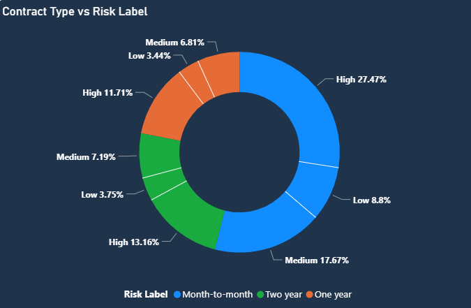
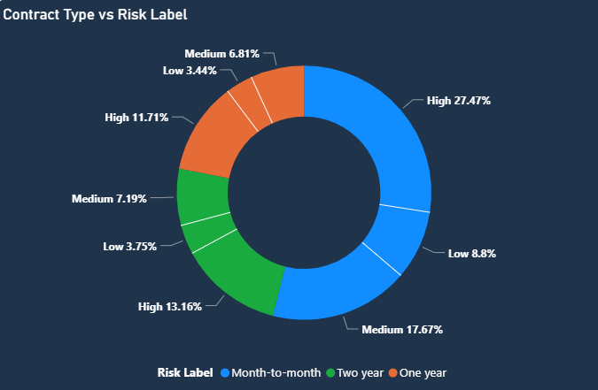

Telco Customer Churn Prediction & Insights
Using Data Science & Explainable AI to Identify High-Risk Customers and Boost Retention

Concept / Problem
Telecom companies lose millions annually due to customer churn. Predicting which customers are likely to leave helps companies proactively retain them.
In this project, I developed a predictive model to identify high-risk customers and provide actionable insights to reduce churn while protecting recurring revenue.
Approach
- Exploratory Data Analysis (EDA): Understand patterns in churn, tenure, and service usage.
- Feature Engineering: Created derived features like tenure groups, total services, and high charges flags.
- Modeling: Tested Logistic Regression, Random Forest, and XGBoost. Selected the best-performing model based on accuracy, precision, recall, and ROC-AUC.
- Explainability: Used SHAP values to identify key features driving churn for each customer.
- Business Insights: Calculated expected saved revenue and suggested targeted retention strategies.

Data
The dataset consists of 7,043 telecom customers with features like gender, seniority, service usage, contract type, payment method, and monthly charges.
Key variables:
tenure, MonthlyCharges, TotalCharges- Contract & Payment Type
- Service usage flags (Online Security, Streaming, Tech Support)
- Target variable:
Churn (Yes/No)
Key Insights & Visuals
- Churn Drivers: Customers with Fiber-optic internet, month-to-month contracts, or electronic check payments are more likely to churn.
- Demographics: Senior citizens and customers without partners or dependents have higher churn rates.
- Revenue Opportunity: Targeting high-risk customers can potentially save ~$145,000 in annual revenue.
Screenshots Carousel
Code & Dashboard
- Notebook snippets: EDA, Feature Engineering, Model Training
- Power BI dashboard: Key Influencers, customer segmentation, churn probabilities
- SHAP feature importance visuals
View Feature Engineering Code
df['tenure_group'] = pd.cut(df['tenure'], bins=[0, 12, 24, 36, 48, 60, 72],
labels=['0-12','13-24','25-36','37-48','49-60','61+'])
Impact / Results
Model Performance:
- Accuracy: 80%
- Precision: 65%
- Recall: 52%
- ROC-AUC: 0.84
Business Impact:
- Identified 684 high-risk customers
- Expected saved revenue: $145,095 if retention campaigns are applied successfully
Links

 
